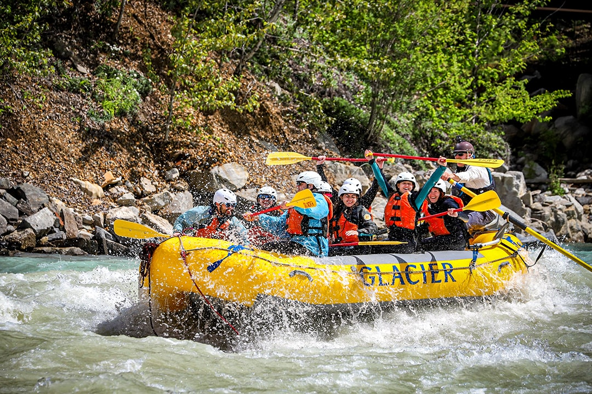

F.A.Q.
Make Memories with Dry Oar
Frequently Asked Questions
Is this a good trip for kids? What are the age ranges you allow?
Absolutely, this is a good trip for children of all ages. We have found, however, that children over the age of 8 seem to enjoy it more overall...
Is whitewater rafting safe? I don't even know how to swim! Can I still come?
As with all adventure sports, there is an inherent and assumed element of risk...
What is included in the trip?
We will provide all necessary camping equipment...
What do I need to bring?
The most effective way to plan for temperature and weather changes in the Canyon is to be prepared for both hot & dry and cold & wet...